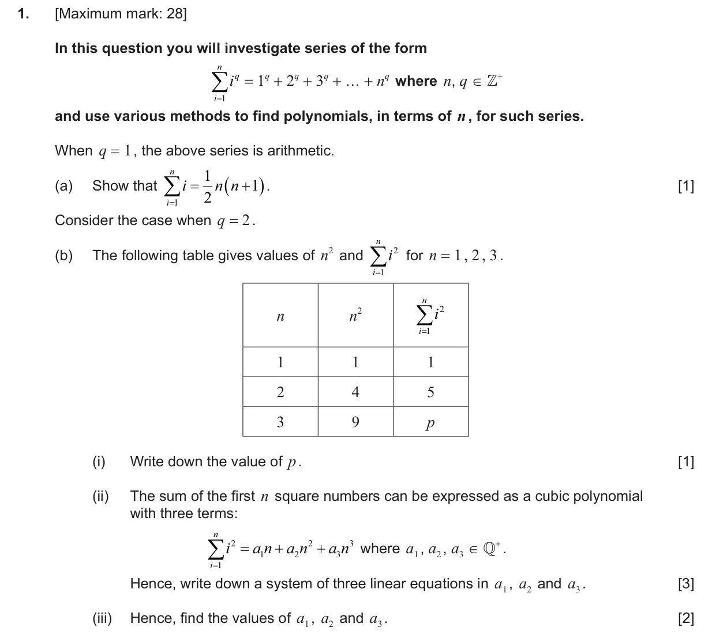
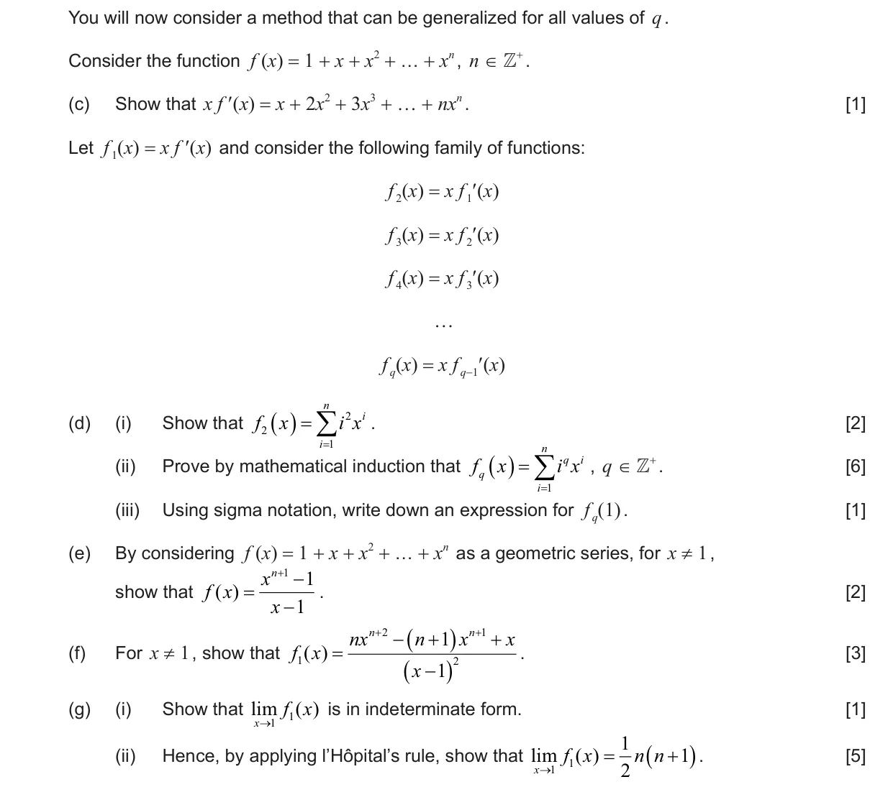
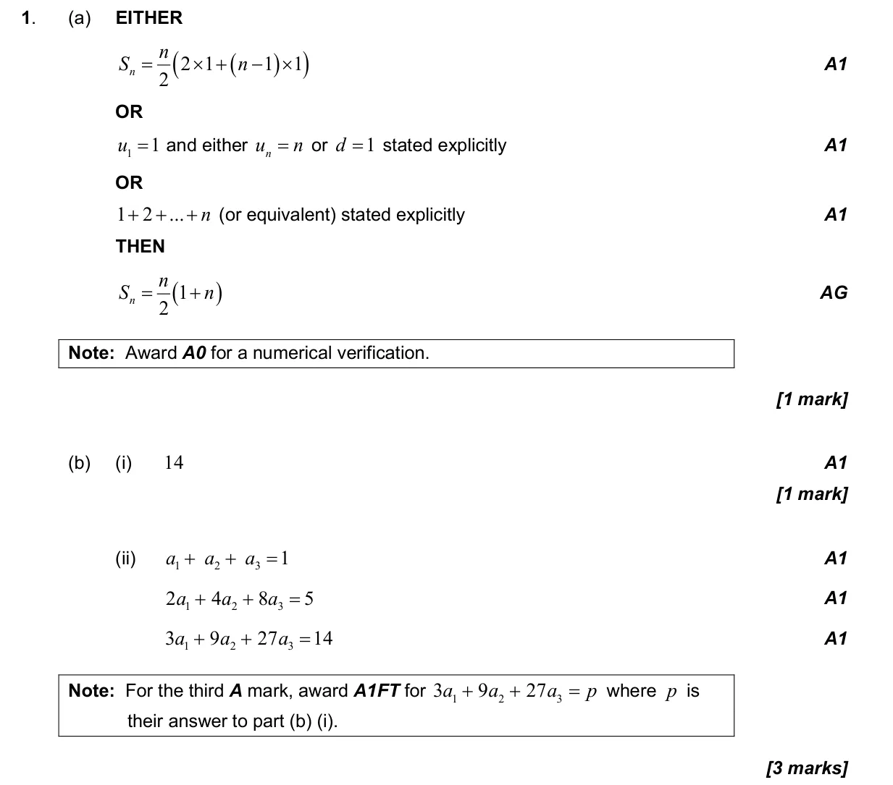
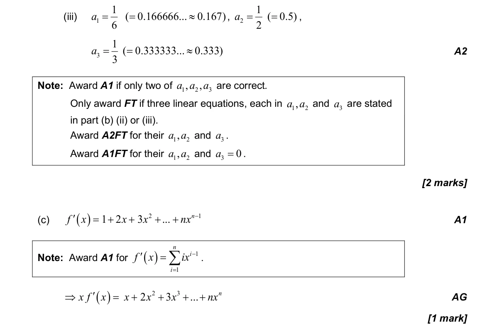
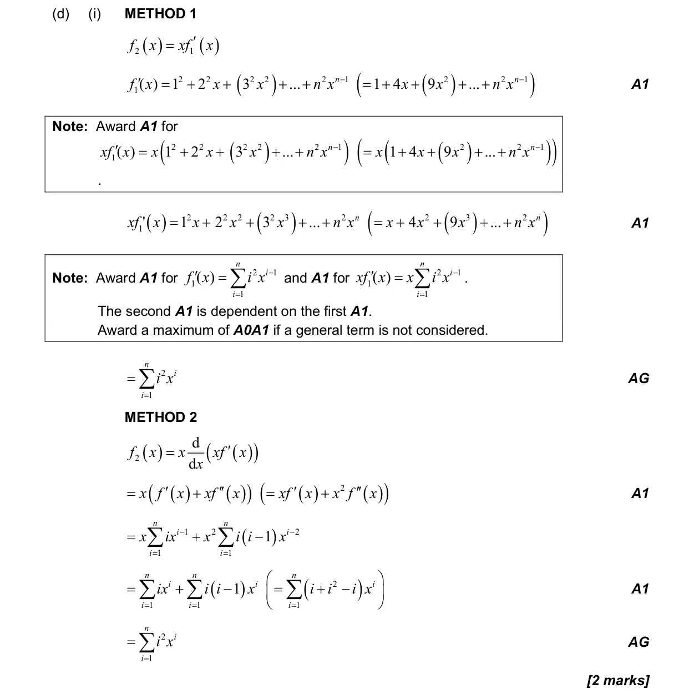
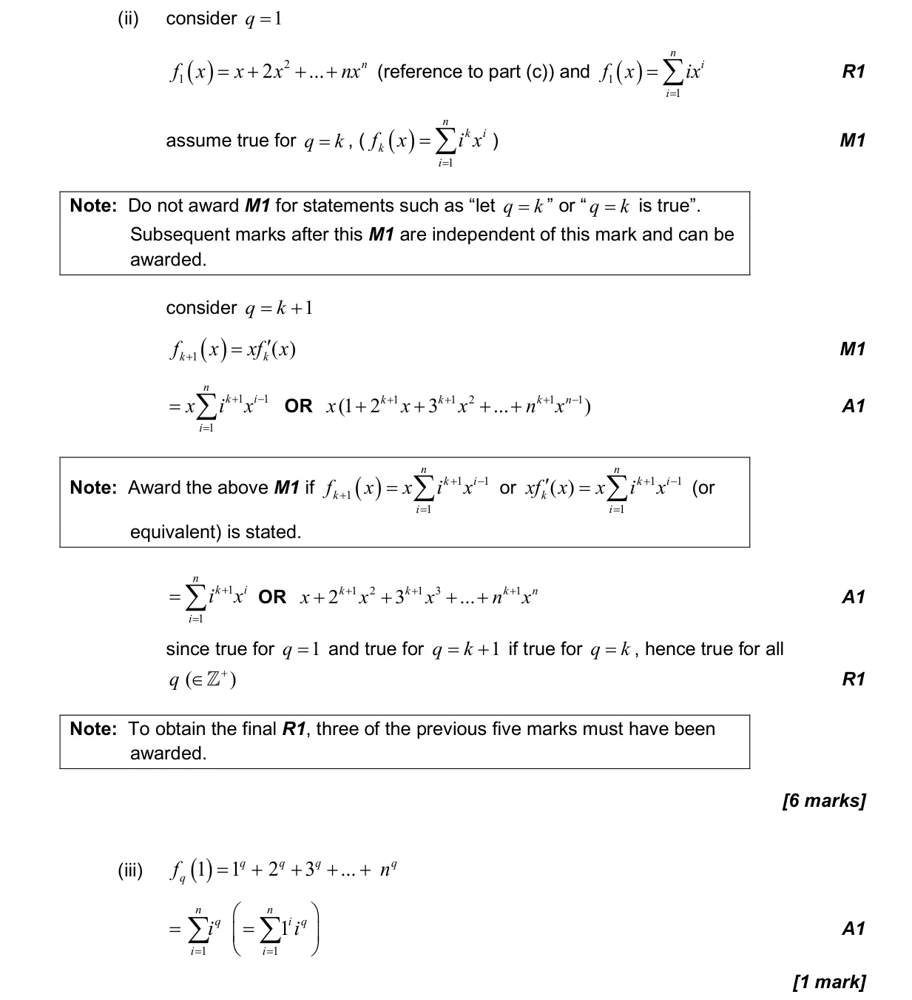
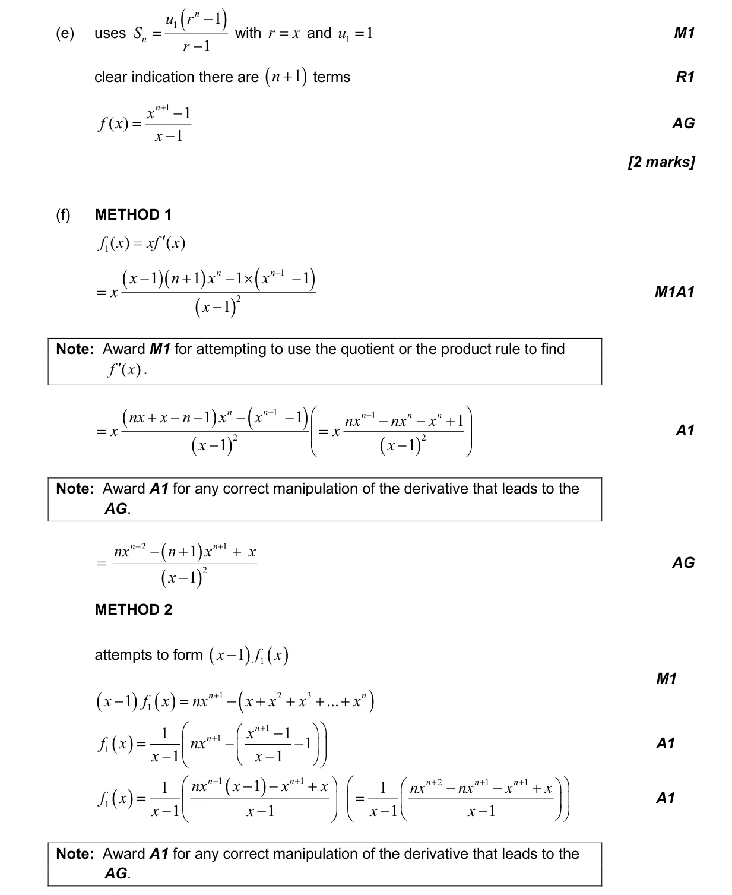
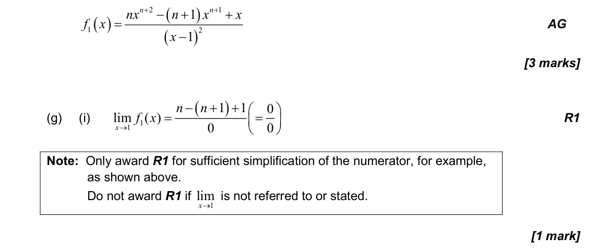
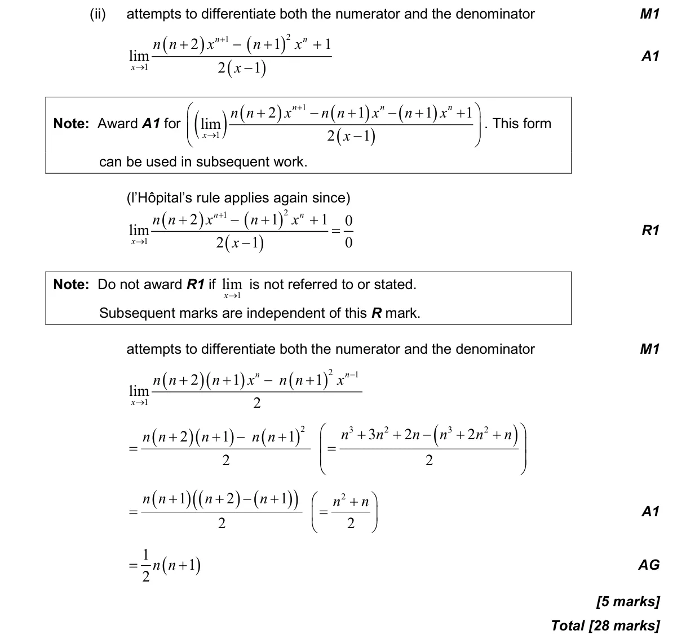

5.3 Differentiating polynomials, n in Z5.13 Limits by l'Hôpital's rule or Maclaurin series1.16 Systems of linear equations in up to three unknowns1.2 Arithmetic sequences and series1.15 Proof by induction, by contradiction and by counterexample5.6 Differentiating polynomials n in Q, chain, product and quotient rules1.3 Geometric sequences and series
Question


Markscheme






